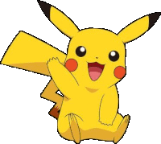

-
Bulbasaur #001

- Grama
- Veneno
Bulbasaur é um pokémon quadrúpede, com coloração verde clara, tendo detalhes no seu corpo em forma geométrica plana na cor verde escuro, além de uma espécie de planta fechada em suas costas e possui olhos vermelhos.
-
Ivysaur #002

- Grama
- Veneno
Ivysaur é a evolução do Bulbasaur, sua coloração muda para um azul esverdeado claro, tendo os detalhes do seu corpo na cor azul esverdeado escuro, desenvolve presas e a planta em suas costas começa a desabrochar.
-
Venusaur #003

- Grama
- Veneno
Venusaur é a evolução do Ivysaur, seu corpo fica maior e sua coloração muda para um verde ciano, desenvolve presas e garras maiores, além da planta em suas costas ter desabrochado completamente.
-
Charmander #004

- Fogo
Charmander é um Pokémon dracônico e bípede, seu corpo tem uma coloração laranja claro e a chama que arde na ponta de sua cauda é uma indicação das suas emoções. Se fica furioso, a chama queima ferozmente.
-
Charmeleon #005

- Fogo
Charmeleon é a evolução do Charmander, seu corpo fica maior e com uma coloração avermelhada. Cresce um chifre na parte de trás da sua cabeça, ele tem uma natureza perversa e constantemente procura adversários.
-
Charizard #006

- Fogo
Charizard é a evolução do Charmeleon, quando cresce vira um dragão por completo com uma coloração laranja. Cresce dois chifres na parte de trás da sua cabeça e duas asas em suas costas. É um dos Pokémons mais temidos da região.
-
Squirtle #007

- Água
Squirtle é parecido com uma tartaruga bípede e tem seu corpo numa coloração azul claro, possui um casco arredondado e com ranhuras para minimizar a resistência da água, o fazendo nadar em alta velocidade. Quando retrai sua cabeça para dentro da concha, ele esguicha água com uma força vigorosa.
-
Wartortle #008

- Água
Wartortle é a evolução do Squirtle, tem suas presas e garras maiores e mais nítidas, sua cauda fica maior e mais macia e ganha orelhas peludas. É reconhecido como um símbolo de longevidade.
-
Blastoise #009

- Água
Blastoise é a evolução do Wartortle, ele é maior e com uma coloração azul escuro, seu casco possui dois canhões de água muito precisos, que atingem alvos a longa distância.
-
Pikachu #025
- Elétrico
Pikachu é um Pokémon roedor com pelagem amarela, tem orelhas longas com as pontas pretas, armazena energia elétrica dentro de suas bochechas vermelhas e sua calda tem formato de raio "ZigZag". Ele é quadrúpede, mas mostrou conseguir ficar em pé e andar ereto.